LuwaBeta / BêtaClarity through simplicity.
Typography, white surfaces, neutral borders and focused actions.
Primary action Design guideA restrained surface
Static component reference only. Preserve Kernelium’s actual animated hero logo in the destination website.
Fine borders Geist VariableVisual guide only. Any Luwa product demonstration uses fictitious data.